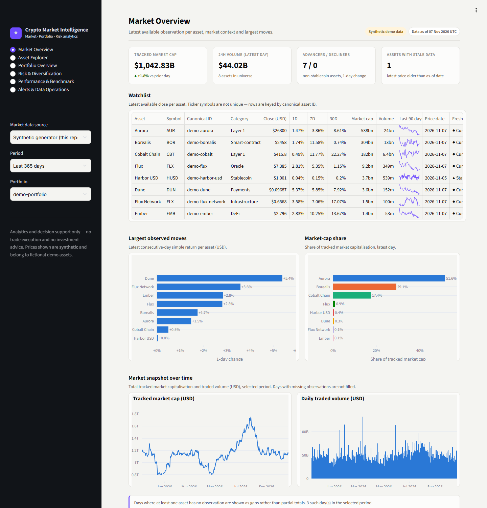
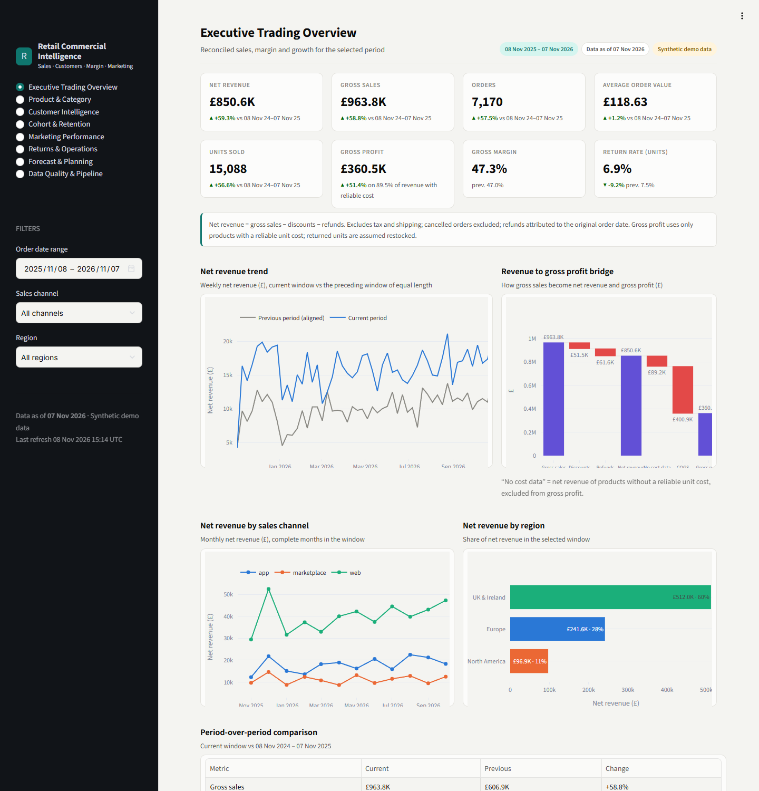
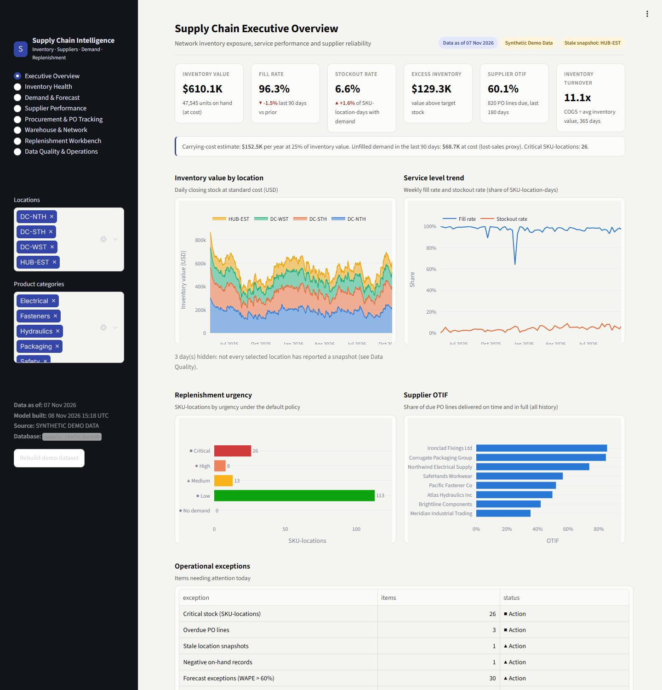

Case studies
Independent projects: each has its own data model, pipeline, tests and app.
Crypto Market Intelligence & Portfolio Analytics
Problem: scattered exchange exports, ticker collisions and silent price gaps make portfolio value, P&L and risk hard to trust.
- CoinGecko adapter with pagination, rate limiting, retry/backoff and raw-payload lineage, plus an offline synthetic provider
- FIFO ledger for buys, sells, transfers and fees, with realised/unrealised P&L and an audit trail
- Volatility, drawdown, correlation, Sharpe (with stated assumptions), concentration, and time-weighted returns against benchmarks
- Configurable alerts, plus data operations for missing intervals, duplicates, freshness and failed runs

Retail & E-commerce Commercial Intelligence
Problem: revenue, margin, customer and marketing data live in separate systems, so trading reviews and marketing spend decisions rest on numbers that don't reconcile.
- Validated, currency-standardised star schema with order-to-item reconciliation
- Explicit KPI rules for discounts, returns, cancellations, tax and shipping; gross profit only where cost is known
- RFM segmentation, cohort retention and observed vs modelled customer value
- Marketing attribution bridge (no spend duplication), CAC and ROAS with caveats, and backtested forecasts

Supply Chain & Inventory Optimisation Intelligence
Problem: planners can't see stockout risk, excess stock or supplier reliability across SKUs and sites, and replenishment runs on gut feel.
- Separate facts at their own grain (snapshots, movements, demand, PO lines, receipts) on shared dimensions
- Unit-of-measure and currency standardisation, negative-stock and orphan-key checks, and snapshot-vs-movement reconciliation
- ABC/XYZ classification, days of cover, OTIF/OTD, lead-time variability, and forecasts with WAPE/MAE backtests
- Replenishment workbench covering safety stock, reorder point and suggested quantity, with what-if scenarios. Recommendations go to planner review and never create POs automatically.

How every project is built
One engineering pattern, applied three times.
Ingest & validate
Source adapters, schema and range checks, deduplication and freshness tests. Failed loads are logged, never ignored.
Model & compute
A DuckDB star schema with explicit grains, a reusable SQL view layer, and pure KPI functions tested on hand-computed fixtures.
Present & govern
Streamlit dashboards with data-as-of labels and DQ visibility, plus a Power BI semantic model spec with DAX and M.
Run any project locally
git clone <this-repository>
cd analytics-portfolio/<project-folder>
python -m venv .venv && source .venv/bin/activate # Windows: .venv\Scripts\activate
pip install -r requirements.txt
streamlit run app.py # builds the synthetic demo database on first start
pytest # unit, integration, data-quality and app smoke tests